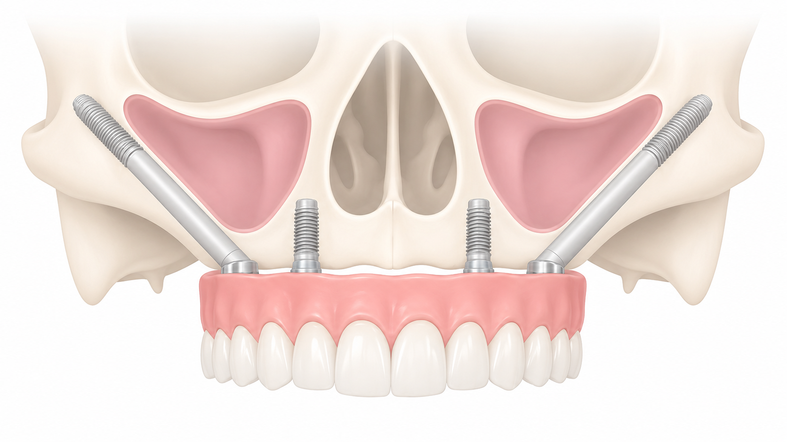
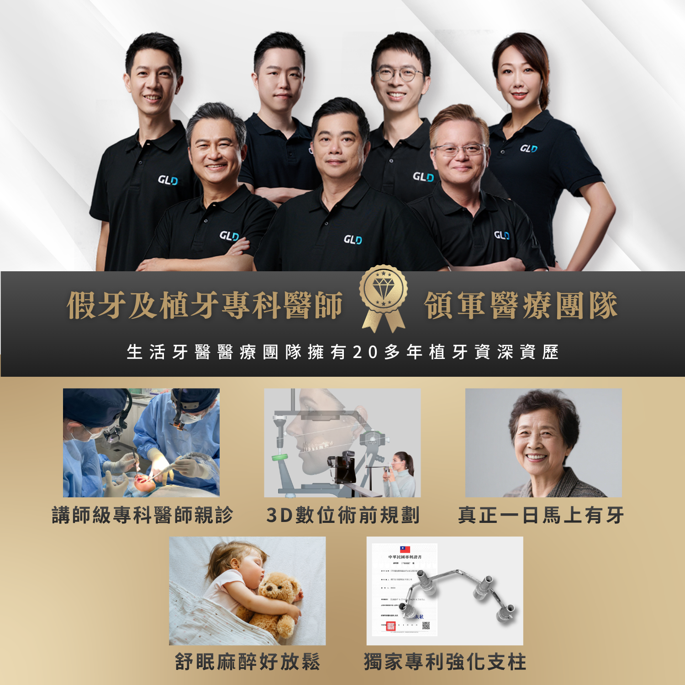
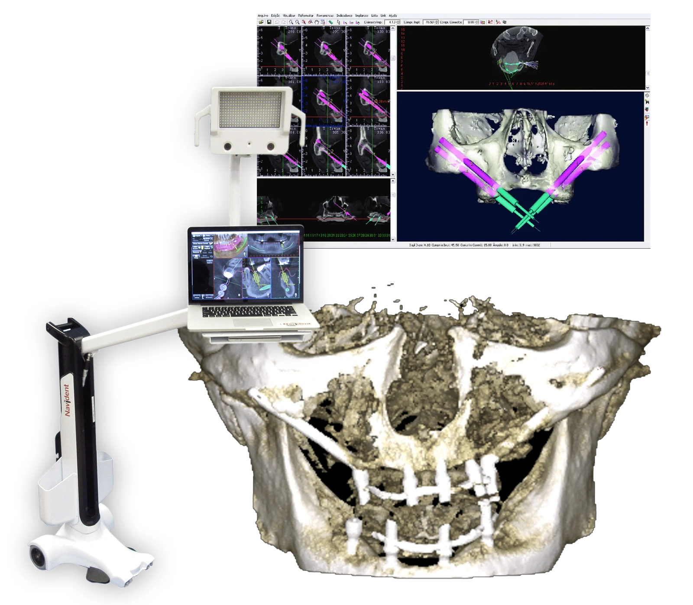
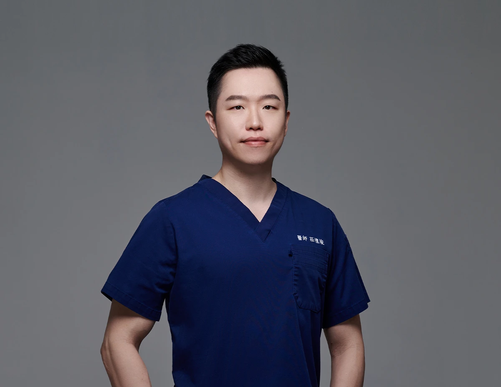
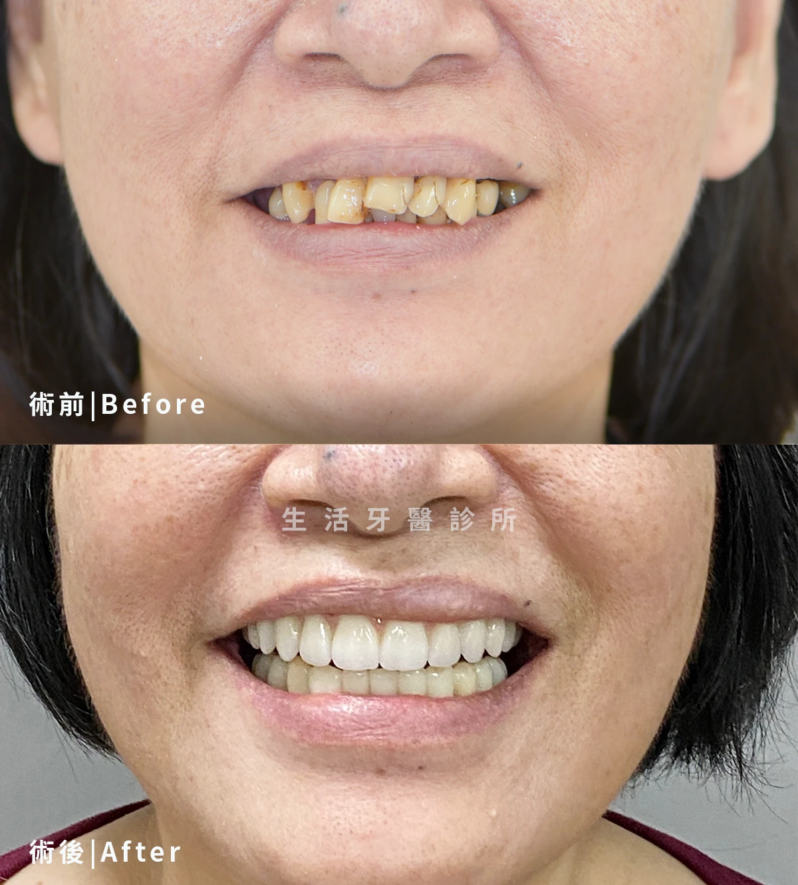
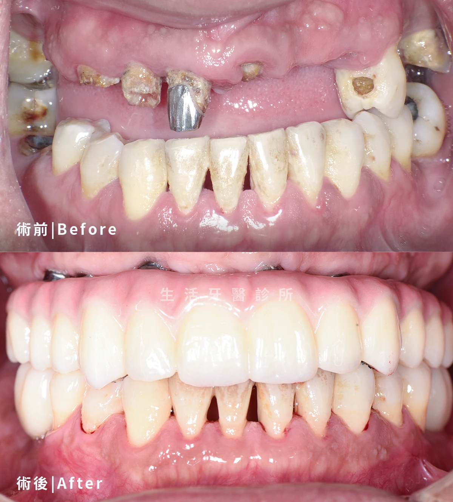

柳朝升醫師
- 國防醫學院牙醫系學士
- 四川大學華西口腔醫學院口腔種植科碩士
- 國防醫學院臨床講師
- 衛生署口腔顎面外科專科醫師
- 三軍總醫院口腔外科主治醫師
- ICOI 國際口腔植體學會專科醫師
- 中華民國植牙醫學會專科醫師
- 美國加州大學洛杉磯分校植牙中心研究
- 美國南加州大學植牙中心研究
為上顎骨質嚴重不足者規劃進階支撐
針對上顎後牙區骨質嚴重萎縮、傳統植牙不易穩定放置植體，或全口重建需避開大量補骨的患者， 透過影像評估與顴骨植體規劃，爭取固定式假牙所需的支撐條件。

顴骨植牙是針對上顎骨質嚴重不足者的進階全口重建選項，透過較長的植體固定於顴骨區域，協助建立固定式假牙支撐。
當上顎後牙區因長期缺牙、鼻竇位置或骨質萎縮，導致傳統植牙需要大量補骨或療程時間拉長時，醫師可評估是否以顴骨植體作為後方支撐，搭配前方植體完成全口固定式重建。
生活牙醫會以 3D 影像、咬合資料與假牙空間進行整體規劃，評估植體角度、顴骨條件、鼻竇周邊結構與術後清潔方式，讓治療計畫兼顧安全、功能與長期維護。

當上顎骨量嚴重不足、傳統植牙不易穩定放置，或需要大量補骨才能重建時，可安排顴骨植牙評估；醫師會綜合顴骨與鼻竇結構、咬合、口腔健康及全身狀況判斷適合方式。
上顎後牙區骨質高度不足，傳統植體不易取得穩定支撐，需要評估其他植體固定方式者。
長期缺牙使上顎齒槽骨明顯萎縮，已影響一般植牙條件，需要進階全口重建評估者。
曾被告知需要大量補骨或較長等待期，希望了解顴骨植牙等固定式重建選項者。
活動假牙容易鬆動、壓痛或咀嚼無力，希望重建固定式咬合支撐與日常飲食功能者。
需要整合顴骨植體、前方植體、全口假牙及咬合設計，進行跨專科完整規劃者。
生活牙醫醫療團隊擁有 25 年植牙資深資歷，整合專科醫師親診、3D 術前規劃、舒眠麻醉與感染控制，讓顴骨植牙評估更完整。

顴骨植牙屬於高階全口重建手術，需完整影像診斷、假牙設計與全身健康評估，每個階段都會依個人條件調整。

| 比較項目 | 顴骨植牙進階 | 傳統補骨植牙 | 活動假牙 |
|---|---|---|---|
| 骨量需求 | ◎ 可評估顴骨支撐 | △ 常需足夠補骨條件 | ◎ 不需植體支撐 |
| 療程時間 | ◎ 可減少等待補骨時間 | △ 補骨癒合期較長 | ◎ 製作較快 |
| 咀嚼功能 | ◎ 以固定式假牙重建 | ◎ 穩定後功能佳 | △ 受假牙穩定度影響 |
| 手術複雜度 | △ 需高階手術規劃 | △ 需多階段補骨 | ◎ 無植牙手術 |
| 適合對象 | 上顎骨量嚴重不足且需固定式重建者 | 可接受補骨與較長療程者 | 暫時性使用或無法接受植牙手術者 |
顴骨植牙的成功關鍵，在於術前完整分析顴骨支撐、上顎骨萎縮程度、鼻竇周邊結構與假牙受力方向。
生活牙醫會透過 3D 影像資料、口腔掃描與咬合評估，分析顴骨厚度、鼻竇位置、前方骨量、植體可用角度，以及臨時假牙與正式假牙需要的支撐空間。
在手術前，醫師會與您討論重建目標、手術風險、假牙外型、笑容支撐與清潔需求，讓顴骨植牙不只是取得支撐，更能兼顧長期維護。

整合口顎外科、數位植牙、假牙贋復與牙體技術團隊，從高難度手術評估到固定式假牙完成共同規劃。



嚴選真實案例，由專業醫師團隊親自操刀，沒有千篇一律的療程，只有最適合你的量身規劃



整理顴骨植牙諮詢時常見問題，協助您先了解適應條件、手術規劃與後續維護。
整理諮詢時常見的問題，協助您在看診前先掌握基本方向。
歡迎預約諮詢，由醫師一對一親診為您規劃療程，讓我們一起打造最符合需求的治療方案